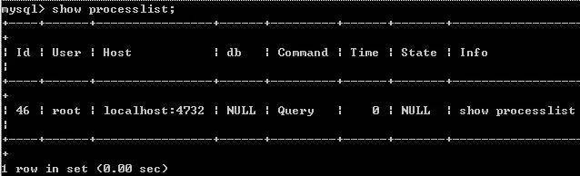
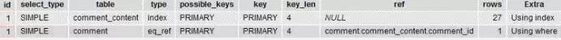

|
|
☰ 目录
20180403_MySQL慢查询&分析SQL执行效率浅谈如何在MySQL中查找效率慢的SQL语句呢？这可能是困扰很多人的一个问题，MySQL通过慢查询日志定位那些执行效率较低的SQL 语句，用 MySQL慢查询定义分析MySQL语句查询性能的方法除了使用 EXPLAIN 输出执行计划，还可以让MySQL记录下查询超过指定时间的语句，我们将超过指定时间的SQL语句查询称为“慢查询”。 慢查询的体现慢查询主要体现在慢上，通常意义上来讲，只要返回时间大于 >1 sec上的查询都可以称为慢查询。慢查询会导致CPU，内存消耗过高。数据库服务器压力陡然过大，那么大部分情况来讲，肯定是由某些慢查询导致的。 开启慢查询的方法： MySQL5.0以上的版本可以支持将执行比较慢的SQL语句记录下来。 字段解释long_query_time 当SQL语句执行时间超过此数值时，就会被记录到日志中，建议设置为1或者更短。 slow_query_log 这个参数设置为ON，可以捕获执行时间超过一定数值的SQL语句。 slow_query_log_file 记录日志的文件名。 一旦slow_query_log变量被设置为ON，MySQL会立即开始记录。 /etc/my.cnf 里面可以设置上面MySQL全局变量的初始值。 分析SQL执行效率浅谈 一、MySQL数据库有几个配置选项可以帮助我们及时捕获低效SQL语句slow_query_log 这个参数设置为ON，可以捕获执行时间超过一定数值的SQL语句。 long_query_time 当SQL语句执行时间超过此数值时，就会被记录到日志中，建议设置为1或者更短。 slow_query_log_file 记录日志的文件名。 log_queries_not_using_indexes 这个参数设置为ON，可以捕获到所有未使用索引的SQL语句，尽管这个SQL语句有可能执行得挺快。 二、检测MySQL中sql语句的效率的方法1. 通过查询日志 1）Windows下开启MySQL慢查询 MySQL在Windows系统中的配置文件一般是my.ini找到[mysqld]下面加上 代码如下 log slow queries = F:/MySQL/log/mysqlslowquery.log long_query_time = 2 2）Linux下启用MySQL慢查询 MySQL在Linux系统中的配置文件一般是是my.cnf找到[mysqld]下面加上 代码如下 log slow queries = /data/mysqldata/slowquery.log long_query_time = 2 说明： log slow queries = /data/mysqldata/slowquery.log 为慢查询日志存放的位置，一般这个目录要有MySQL的运行帐号的可写权限，一般都将这个目录设置为MySQL的数据存放目录； long_query_time = 2中的2表示查询超过两秒才记录； 2. show processlist 命令 SHOW PROCESSLIST显示哪些线程正在运行。您也可以使用mysqladmin processlist语句得到此信息。 例如如图：  各列的含义和用途： Id列：一个标识，你要kill一个语句的时候很有用，用命令杀掉此查询 /*/mysqladmin kill 进程号。 User列：显示单前用户，如果不是root，这个命令就只显示你权限范围内的sql语句。 Host列：显示这个语句是从哪个ip的哪个端口上发出的。用于追踪出问题语句的用户。 db列：显示这个进程目前连接的是哪个数据库。 Command列：显示当前连接的执行的命令，一般就是休眠（sleep），查询（query），连接（connect）。 Time列：此这个状态持续的时间，单位是秒。 State列：显示使用当前连接的sql语句的状态，很重要的列，后续会有所有的状态的描述，请注意，state只是语句执行中的某一个状态，一个 sql语句，以查询为例，可能需要经过copying to tmp table，Sorting result，Sending data等状态才可以完成 Info列:显示这个sql语句，因为长度有限，所以长的sql语句就显示不全，但是一个判断问题语句的重要依据。 这个命令中最关键的就是state列，MySQL列出的状态主要有以下几种： Checking table：正在检查数据表（这是自动的）。 Closing tables：正在将表中修改的数据刷新到磁盘中，同时正在关闭已经用完的表。这是一个很快的操作，如果不是这样的话，就应该确认磁盘空间是否已经满了或者磁盘是否正处于重负中。 Connect Out：复制从服务器正在连接主服务器。 Copying to tmp table on disk：由于临时结果集大于tmp_table_size，正在将临时表从内存存储转为磁盘存储以此节省内存。 Creating tmp table：正在创建临时表以存放部分查询结果。 deleting from main table：服务器正在执行多表删除中的第一部分，刚删除第一个表。 deleting from reference tables：服务器正在执行多表删除中的第二部分，正在删除其他表的记录。 Flushing tables：正在执行FLUSH TABLES，等待其他线程关闭数据表。 Killed：发送了一个kill请求给某线程，那么这个线程将会检查kill标志位，同时会放弃下一个kill请求。MySQL会在每次的主循环中检查kill标志位，不过有些情况下该线程可能会过一小段才能死掉。如果该线程程被其他线程锁住了，那么kill请求会在锁释放时马上生效。 Locked：被其他查询锁住了。 Sending data：正在处理SELECT查询的记录，同时正在把结果发送给客户端。 Sorting for group：正在为GROUP BY做排序。 Sorting for order：正在为ORDER BY做排序。 Opening tables：这个过程应该会很快，除非受到其他因素的干扰。例如，在执ALTER TABLE或LOCK TABLE语句行完以前，数据表无法被其他线程打开。正尝试打开一个表。 Removing duplicates：正在执行一个SELECT DISTINCT方式的查询，但是MySQL无法在前一个阶段优化掉那些重复的记录。因此，MySQL需要再次去掉重复的记录，然后再把结果发送给客户端。 Reopen table：获得了对一个表的锁，但是必须在表结构修改之后才能获得这个锁。已经释放锁，关闭数据表，正尝试重新打开数据表。 Repair by sorting：修复指令正在排序以创建索引。 Repair with keycache：修复指令正在利用索引缓存一个一个地创建新索引。它会比Repair by sorting慢些。 Searching rows for update：正在讲符合条件的记录找出来以备更新。它必须在UPDATE要修改相关的记录之前就完成了。 Sleeping：正在等待客户端发送新请求. System lock：正在等待取得一个外部的系统锁。如果当前没有运行多个mysqld服务器同时请求同一个表，那么可以通过增加--skip-external-locking参数来禁止外部系统锁。 Upgrading lock：INSERT DELAYED正在尝试取得一个锁表以插入新记录。 Updating：正在搜索匹配的记录，并且修改它们。 User Lock：正在等待GET_LOCK()。 Waiting for tables：该线程得到通知，数据表结构已经被修改了，需要重新打开数据表以取得新的结构。然后，为了能的重新打开数据表，必须等到所有其他线程关闭这个表。以下几种情况下会产生这个通知：FLUSH TABLES tbl_name, ALTER TABLE, RENAME TABLE, REPAIR TABLE, ANALYZE TABLE,或OPTIMIZE TABLE。 waiting for handler insert：INSERT DELAYED已经处理完了所有待处理的插入操作，正在等待新的请求。 大部分状态对应很快的操作，只要有一个线程保持同一个状态好几秒钟，那么可能是有问题发生了，需要检查一下。 还有其他的状态没在上面中列出来，不过它们大部分只是在查看服务器是否有存在错误是才用得着。 三、explain来了解SQL执行的状态explain显示了mysql如何使用索引来处理select语句以及连接表。可以帮助选择更好的索引和写出更优化的查询语句。 使用方法，在select语句前加上explain就可以了，例如下： 结果如图：  EXPLAIN列的解释table列：显示这一行的数据是关于哪张表的 type列：这是重要的列，显示连接使用了何种类型。从最好到最差的连接类型为const、eq_reg、ref、range、index和ALL possible_keys 列：显示可能应用在这张表中的索引。如果为空，没有可能的索引。可以为相关的域从WHERE语句中选择一个合适的语句 key列：实际使用的索引。如果为NULL，则没有使用索引。很少的情况下，MYSQL会选择优化不足的索引。这种情况下，可以在SELECT语句 中使用USE INDEX（indexname）来强制使用一个索引或者用IGNORE INDEX（indexname）来强制MYSQL忽略索引 key_len列：使用的索引的长度。在不损失精确性的情况下，长度越短越好 ref列：显示索引的哪一列被使用了，如果可能的话，是一个常数 rows列：MYSQL认为必须检查的用来返回请求数据的行数 Extra列：关于MYSQL如何解析查询的额外信息。 最后MySQL优化建议 - 索引优化，最简单粗暴的办法，给查询语句添加复合索引，但不是最好的方式 - 将大表拆成小的汇总表 - 重在实践，MySQL优化器在很多情况下不能给出，最快的实现方式 - 避免在大表上的group by，order by，offset 操作，除非你知道如何优化的前提下 - SQL WHERE查询条件，尽量按照添加的索引顺序来写 |